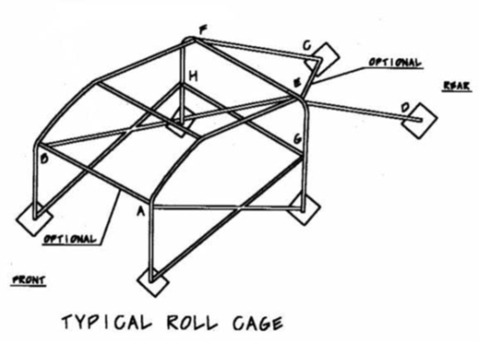

NASA Time Trial B-F Class Calculator 2016
This is an unoffical calculator! For the offical calculator and rules
click here!
is your TT class (if also within Adjusted Wt/HP Ratio limits)
Points (
)
TTB
TTC
TTD
TTE
TTF
TTG
TTH
Base Class
0
7
14
Asterix Points
Section A - TIRES
A1
- The following DOT approved R-Compound Tires: BFG R1S, Goodyear Eagle RS AC, Hoosier A7, Hankook Z217 (C90 & C91 Compounds), Hoosier Wet DOT (if used in dry conditions) +22
A2
- The following DOT approved R-Compound Tires: Hoosier A6 +17
A3
- The following DOT approved R-Compound Tires: BFG R1, Goodyear RS, Hankook Z214 (C71, C70, C51, C50), Hoosier R7, Kumho V710 +10
A4
- The following DOT approved R-compound tires: Hoosier SM7 +9
A5
- The following DOT approved R-Compound Tires: Hoosier R6, Hoosier SM6 (note: CTSC EC-Dry Tires (225, 245, 275) OK) +8
A6
- The following DOT approved R-Compound Tires: Toyo Proxes RR, Hankook TD, Pirelli Trofeo R +7
A7
- The Following DOT approved tires and those R-compound tires with a UTQG treadwear rating over 40: BFG Rival S, Bridgestone REO71-R, Maxxis RC-1 (ex. Kumho V700, Kumho V720, Michelin Pilot Sport Cup & MPS Cup 2, Nitto NT01, Pirelli PZero Corsa, Toyo R888, Toyo RA-1, Yokohama A048, etc.) +6
A8
- DOT-Approved (non-R-compound) tires with a UTQG treadwear rating of 120-200 (ex. BFG g-Force Rival, Toyo R1R, Dunlop Direzza Sport ZII Star Spec, Bridgestone Potenza RE070, Kumho Ecsta XS, Yokohama Advan A046 & Neova AD08, Hankook R-S3) +2
A9
- Non-DOT slicks +30 (note - certain Non-DOT tires such as Continental Tire Series Tires are +10 - see ruleset for list)
Actual Largest Tire Size
Base Class Tire Size
0
mm difference =
0
points
Exceptions: The Hoosier 255/35/18 (A6 & R6) will be assessed points based on its actual 275mm size (and not the 255mm listed on the sidewall)
Total Tire Points:
0
Section B - WEIGHT REDUCTION
Base Weight/Listed Weight
Minimum Competition Weight
0
lbs reduction =
0
points
Section C - ENGINE
Forced Induction Vehicles Check Box (unless re-classed by Dyno testing) +5
C1, C2
- See ruleset please. Check box if your car has been reclassified by National Director under either of these rules or if you have a custom reclassification from the National Director
None
Naturally Aspirated
Forced Induction
C3
- Aftermarket computer system (any non-BTM “stand-alone” or “piggyback”): +3 naturally aspirated, +10 forced induction
C4
- Modification of the BTM air intake/box, air filter location, air piping to the turbo/supercharger/intercooler/throttle body/carburetor, or hood/fascia/fender air inlet(s), outlets, or vents +1 (air filter upgrade alone 0 pts.)
None
Throttle Body
ITBs
C5
- Non-BTM, deleted or modified/ported throttle body +2; independent throttle bodies +4
C6
- Non-BTM or modified carburetor, fuel rail, fuel injectors, fuel pump(s), and/or fuel pressure regulator +2 (no points for fuel pump alone if using BTM fuel and timing maps, sensor inputs, and ignition timing)
None
4 cyl
6 cyl
8 cyl
12A
13B
All other rotart
C7
- Non-BTM, modified/ported, or deleted intake manifold: 4cyl +1, 6cyl +2, 8cyl +3, 12A &13B rotary +2, all other rotary +3
C8
- Water injection system +6 (alcohol-water mixtures are not permitted)
C9
- C9 - Nitrous Oxide injection is not permitted
C10
- Replacement pulleys (other than for supercharger) or non-electrical fan removal +1
C11
- Replacement pulley for BTM supercharger or replacement of any pulley that affects BTM supercharger speed +4
C12
- Aftermarket boost controller or modification/alteration of the BTM vacuum line(s) that serve to function as a boost controller +4
C13
- Aftermarket or Modified Wastegate Actuator, wastegate, or vacuum line(s) that serve to control the wastegate actuator function or increase peak boost +3
C14
- Add aftermarket intercooler +7
C15
- Non-BTM or modified intercooler +4 (Intercooler sprayers must meet BTM definition, otherwise not allowed)
<1.5%
1.5% to <5.5%
5.5% to <7%
7% to <10%
10% to <15%
15% to <20%
>20%
C16
- Increased displacement by: <1.5% +0, 1.5% to <5.5% +4, 5.5% to <7% +6, 7% to <10% +8, 10% to <15% + 10, 15% to <20% +15, > 20% +20.
C17
- Modified or Non-BTM camshafts, rocker arms, pushrods, or cam timing gears (for one or more) +6
C18
- Valve size change, modified, ported, and/or polished BTM heads (other than simple shaving of the head only) + 6
0.50 or less
>0.50
>1.0
>2.0
>3.0
C19
- Any modification that results in increased engine compression ratio (including head shaving or decking block to factory specs) 0.50 or less +0, >0.50 +3, >1.0 +6, >2.0 +10, >3.0 +15
C20
- De-stroked engine +4
0 points
7 points
14 points
C21
- Added dry sump oil system +7 (+14 if motor is lowered from OEM location)
C22
- Modification, porting, or replacement of the BTM exhaust manifold or header(s) (includes any/all other exhaust and catalytic converter modifications) +5
C23
- Any modification to the BTM exhaust piping and/or catalytic converter (includes muffler modification or replacement) +3
C24
- Non-BTM or modified resonator(s) or muffler(s) only (no exhaust piping modifications) +1
Total Engine Points:
0
Section D - DRIVETRAIN
D1
- Non-BTM sequential (semi-automatic) or dog-ring transmission (non-synchromesh) - includes altered gear ratios +7 (note - automatic with torque converter exempt)
D2
- Double Clutch Transmissions with altered gear ratios +6 (do not also assess D3 & D4)
D3
- Modify number of forward gears in transmission or altered gear ratios +3
D4
- Added paddle/electronic shift +3
D5
- Added limited slip differential or welded/locked differential +3
D6
- Changed or modified limited slip differential (or welded/locked BTM LSD) +1
D7
- Added traction control +3 (no points if proven disabled during competition)
D8
- Relocation of engine/transmission between 1 and 10 inches of the BTM location +7 (note: relocation of less than 1 inch is not assessed points. Original engine location shall be based on the BTM rear face of the engine block and BTM crankshaft centerline)
D9
- Modification/upgrade from a fixed to a floating rear axle +3
Total Drivetrain Points:
0
Section E - SUSPENSION
E1
- Non-BTM shocks/struts/dampers with an external reservoir or more than two ranges of adjustment - must still take points for springs below in E5. +8. (example: compression (bump), low speed rebound and high speed rebound is 3 ranges of adjustment)(May have spherical tops and/or bottoms)
E2
- Non-BTM shocks/struts/dampers with a "piggy back" external reservoir (fixed reservoir w/o connecting hose) OR with shaft diameter 40mm or greater - must still take points for springs below in E5. +5 (May have spherical tops and/or bottoms)
E3
- Non-BTM or modified/re-valved shocks/struts/dampers +3 (all others)(E5 springs not included)(May have spherical tops and/or bottoms)
E4
- Changing the mount orientation/design of the BTM shock and/or spring perch to invert the front shocks/struts (includes non-BTM inverted shocks/struts) +1
E5
- Non-BTM or modified coil springs, bump stops, leaf springs/spacers/brackets, or torsion bars +2
E6
- Conversion of torsion bar/leaf spring suspension to coil spring and strut/shock suspension +2
E7
- Add, replace, remove, or modify anti-roll bars (swaybars - front, rear, or both) or end links - may have spherical joints on the end links and/or relocation of the mounting points without additional assessment. +2
E8
- Non-BTM driver/cockpit adjustable swaybar or other suspension settings +4
E9
- Replace, modify, or remove control arms (including toe arms/links)(other than plates, shims, or eccentric bolts/bushings for simple camber/caster adjustment only) or RWD/AWD rear trailing arms (may have spherical/metallic joint for the connection to the spindle/knuckle) +4
E10
- Non-BTM rear control arms on FWD vehicles (for stiffness & wheel alignment only, no change in suspension mount or pick-up points from stock) +1 (if both front and rear use E9)
E11
- Non-OEM rear trailing arms on FWD (for stiffness & wheel alignment only, no change in suspension mount or pick-up points from stock) +1
E12
- Using the alternate control arm mounting location on cars equipped BTM with multiple choices +6 (ex to increase track width)
E13
- Relocation of front suspension mounting points +6 (Includes modifications to spindles and knuckles that relocate control arm mounting points in space - such as "drop spindles")
E14
- Relocation of rear suspension mounting points +6 (Includes modifications to spindles and knuckles that relocate control arm mounting points in space - such as "drop spindles")
E15
- Front steering tie rod bump steer modifications or shimming of the steering rack +2
E16
- Alteration of ball joints/dive angles +2
E17
- Add panhard rod or Watt’s link (regardless of whether or not the Watts link replaces a BTM panhard rod or the panhard rod replaces a BTM Watts link) (may have spherical joints without an additional points assessment) +4
E18
- Replace or modify a BTM panhard rod or Watt’s link (may have spherical joints without additional assessment) +2
E19
- Add torque arm +4
E20
- Replace or modify a BTM torque arm +2
E21
- Add a 3rd link to the rear suspension that does not penetrate the floor +4
E22
- Metallic replacement suspension bushings (Heim joints/spherical joints) +3 (except for shock tops or bottoms assessed in E.1),E.2), or E.3) above, pillow ball camber plate joints, sway bar endlinks if taking modification E7, control arm spindle/knuckle joints if taking mod E9, and/or Panhard/Watts/3rd link parts if taking mod(s) E17/E18/E19/E20/E21)
Total Suspension Points:
0
Section F - BRAKES/CHASSIS
F1
- Non-BTM, modified, or relocated brake calipers and/or brake caliper brackets and/or brake rotor diameter +2
F2
- Add front lower stress/arm brace (two attachment points maximum) +1
F3
- Add a third or more attachment point to front or rear strut tower bar (or replace existing/BTM 3 attachment point brace) +1 (Additional attachment points must not be tied to any other type of mounting point with anything other than sheetmetal)
F4
- Add or modify other chassis stiffening devices or fabricated parts (such as lower stress/arm braces with > 2 attachment points, subframe connectors, subframe braces, subframe mounts, and/or non-rubber or non-poly subframe mounts/bushings, etc.) +3
F5
- Increase in track width greater than 4 inches due to non-BTM axles, control arms, brake rotors/hats, wheel spacers, hubs, wheel offset, and/or camber adjustment. +6 (measured from the inside of one tire to the outside of the opposite tire at ground level - averaging the measurements in front of and behind the contact patch to negate the effect of toe)
Total Brake/Chassis Points:
0
Section G - AERODYNAMICS
None
Basic Air Dam
Additional Assessment
G1
- Add, replace, or modify front fascia or air dam +3 (except as provided for in the applicable No-Points modification list). The air dam must be vertical (5° tolerance) and must not protrude from the side of the vehicle or it will be assessed an additional +3 points (click both boxes to the right). Additional points must be assessed below for any component of the added/replaced/modified fascia or air dam that performs the functions listed in G2 and/or G3 below
G2
- Add, replace or modify a single front splitter +3 This part may extend horizontally past the side of the vehicle no greater than 5". If any portion of this part that protrudes from the side of the vehicle is not parallel to the ground then additional points must be assessed for canards in G3 below. No material, filler or part may extend beyond the vertical reach of the BTM front fascia without taking points for fascia modification points above in G1.
G3
- Add or modify canards/winglets (includes portions of an added/modified/replaced fascia that provide a downward force other than that listed in G2 above) +2
G4
- Add, replace, or modify rear wing and/or spoiler +4 (a rear wing or spoiler may not exceed a height of 8" above the roofline (or BTM windshield height for convertibles), or a width greater than the width of the car body. (note additional points must be assessed for end plates greater than 12" in height G8 below))
G5
- Add or fabricate flat bottom/belly tray (rearward of the centerline of the front axle) +5
G6
- Add rear diffuser +2 (note: additional points must be assessed for any vertical panels in the diffuser that exceed 5" in height per G8 below) (If taking +2 here for G.6) do not also take assessment for G.7) below)
G7
- Replace or modify BTM rear diffuser, rear bumper cover, or rear “fascia” +1 (note: additional points must be assessed for any vertical panels in the diffuser that exceed 5" in height per G8 below)
G8
- Add rear vertical panels in any location (note: see G4, G7 and G10) +2
G9
- Add or modify side skirts +2 (side skirts must be vertical only or an OEM option only, and cannot connect to any other aero component)
G10
- Add vortex generator to roof, rear window, or rear deck lid +1 (note: additional points must be assessed for any vertical panel of the vortex generator that is greater than 5" in height per G8 above)
G11
- Removal of the front windshield/windshield frame +7 (raking is not permitted)
G12
- Front side window frame air dams/diverters (driver and/or passenger side) +2
G13
- Add a non-OEM hardtop to a convertible that is not the identical shape and size of either the BTM or OEM option hardtop for that car model. +5 (note: the top must not extend rearward of the front edge of the rear deck lid - "fastback" tops and tonneau covers are not permitted)
Total Aerodynamics Points:
0
Note: Active aerodynamic modifications (including but not limited to computerized, cockpit adjustable, self adjusting, etc.) are not permitted
Section H - Roll Cages
6-point (two main hoop, two rear brace, two forward hoop) roll cage designs constructed per the NASA CCR figure below may be utilized without a TT modification point assessment. Two additional attachment points for either two footwell bars or two bars to the front firewall (one on each side for the purpose of additional tire intrusion prevention and not attached to frame, dash bar, or cowling) may be added without a TT modification assessment. Additional bars and/or gusseting within the structure of the cage are permitted without a TT modification point assessment. Gusseting of the 6 CCR attachment points listed above is permitted without a TT modification point assessment provided that the gussets are attached to the tube no further than 6" from the end of the tube and to the chassis no further than 6" from the end of the tube where it terminates at the plate. Up to three additional attachment points solely for the purpose of bars connecting "NASCAR" style driver's side door bars to the rocker panel are permitted without a TT modification point assessment. Additional attachment points within the driver's compartment that exceed these allowances are also permitted, but will be assessed points as follows:
H1
- One or more bars that penetrate the front bulkhead/firewall +2
H2
- Any other attachment point to the chassis not specified as points-free in ruleset +2
Total Roll Cage Points:
0
Note - It is considered a safety hazard to cut through bars without removing them
Figure from NASA CCRs:
